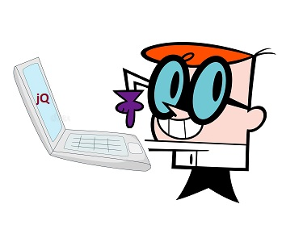

Vervolgen doen we met een verdieping in 'events, of gebeurtenissen.
Na de basis gaan we verder in op 'events'. Op een webpagina speelt zich een constante kakafonie van gebeurtenissen af. We kunnen dus niet enkel items selecteren om acties op toe passen, maar we kunnen aan de hand van triggers dus ook acties enkel laten uitvoeren wanneer er zich een bepaald event voordoet. Muis-events, maar ook document, window, keyboard zijn de voornaamste traceerbare handelingen waarop we acties kunnen instellen.
Klik ergens willekeurig op de pagina om de x- en y-coordinaten hier te loggen: